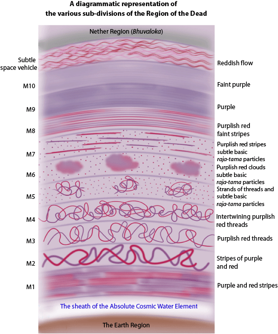
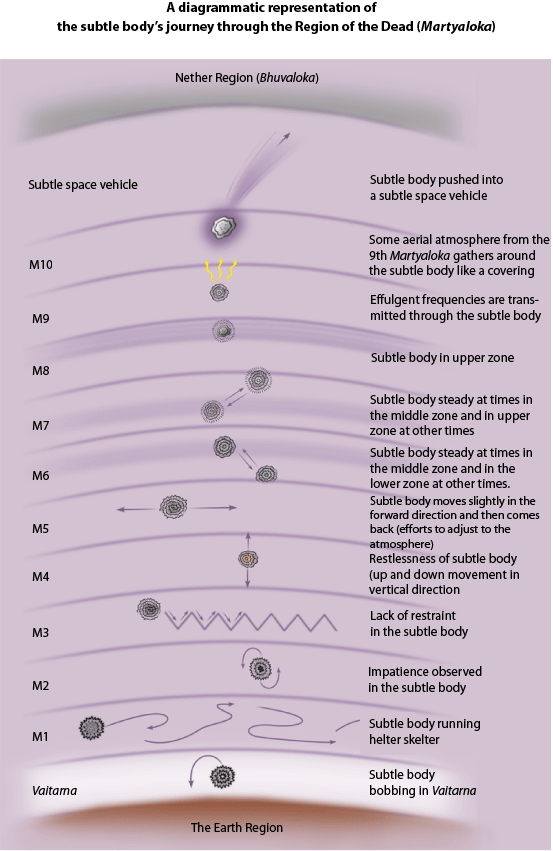

2. To whom is this plane of existence most relevant?
3. The various sub-regions in the Region of the Dead (Martyaloka)
4. Duration of time spent in the Region of the Dead (Martyaloka)
In the article on, ‘Where do we go after death?’, we described the 13 main subtle regions in the Universe where we can go after death. However, immediately after we die, we all go through an interim region in the Universe which is known as the Region of the Dead (Martyaloka). In this region, the subtle body gets accustomed to its new state without a physical body. There are 10 sub-regions in this plane of existence that a subtle body goes through.
This plane is most relevant to those whose final destination in the afterlife is the Nether Region. For these subtle bodies, they move slowly through the various sub-regions of the Region of the Dead (Martyaloka) as they shake off the vestiges and attachments of their Earthly life.
For highly evolved people due to the lightness of their subtle bodies and no attachment to worldly life, they shoot through this region to the higher subtle regions such as Heaven, Mahaaloka etc.
Alternately, subtle bodies who go to one of the regions of Hell sink to the lower regions without spending much time in the Region of the Dead (Martyaloka). This is due to the heaviness of their subtle body that is laden with the negative deeds in their lifetime and their ego and attachments.
There are a total of ten sub-divisions in the Region of the Dead (Martyaloka). We have given a basic description of each of these subtle divisions and the general behaviour of subtle bodies in each of these sub-divisions.
There are descriptions in ancient holy scriptures of the Holy subtle river Vaitarna that all departed ancestors are said to cross before entering the Nether region (Bhuvaloka). This is in fact a subtle sheath of the Absolute Cosmic Water element around the Earth region. This sheath itself is the river Vaitarna. After death, the subtle bodies take a dip in the Vaitarna and enter the Nether region (Bhuvaloka). The remaining excretory gases and sub-vital energies related to the physical body accompanying the subtle body are discharged into the Vaitarna.
Thus the Vaitarna helps strip the subtle body of the last vestiges of the gross body so as to make it subtle enough to make it possible for it to enter the Region of the Dead.

Footnotes: M1, M2, M3.... M10
M1 refers to the first sub division of the Region of the Dead. M2 refers to the second sub division of the Region of the Dead and so on.
The subtle bodies after crossing the Vaitarna enter the ‘Region of the Dead’ (Martyaloka) No 1. The environment in this division appears reddish purple in colour. The subtle bodies are seen running helter-skelter because the environment is new to them. The inherent understanding that they have to move is there, but they have no clue as to which is the right way. Hence all the bodies in this division are restless.
The environment of this division consists of broad streaks of purple and red. The subtle bodies in this division are seen struggling in a drowning motion. The subtle bodies after entering this division do not run around like in the earlier division but nevertheless they are seen constantly moving in one place. Impatience is seen in them. This is because after coming to this division, they are better adjusted than the earlier division, but still do not have a clue about which way to move.
The environment in this division appears as if made from intertwining threads of purplish red colour. Many subtle bodies in this division appear to be moving up and down in an unrestrained manner but in a horizontal line. The subtle bodies have further progressed than the earlier division and try moving in a horizontal line.

Here the intertwining of purplish red threads is even more. The subtle bodies in this division appear very restless to move to the next division. The subtle bodies move in a vertical line from the upper to the lower portion of this division. As movement in the horizontal direction fails to take them out of the Region of Dead, they try vertical movement.
Particles of subtle basic raja-tama are seen in this division. Many streaks of purplish red threads are seen in it. The subtle bodies in this region appear to move ahead, then remain steady and again resume forward motion. They appear to be inclined more towards stability.
The subtle bodies in this division appear becoming stable at times in the middle zone and in the lower zone at other times. The environment in this division is filled with purplish red clouds.
In this division, the clouds become sparse and the subtle basic raja-tama particles are more. The subtle bodies steady at times in the upper zone and in the middle zone at other times.
This division consists of entirely purple colour. Sparse subtle basic raja-tama particles are seen. The subtle bodies steady at the edge of the upper zone.
This division is entirely purple in colour. In this division, effulgent frequencies are seen emanating from the external covering of the subtle bodies. The subtle bodies move to the next zone on the strength of these effulgent frequencies.
The aerial atmosphere of this division is faint purple in colour. The subtle bodies appear to habituate this division for a very short time. The subtle bodies are thrown in an upward direction with the help of the aerial covering of the 9th division. Their destination in the Nether region (Bhuvaloka) or other regions is decided as per their deeds.
This is also known as the Ancestor vehicle. It has its own energy. It is by virtue of momentum of this energy that the subtle bodies are thrown out of this area into the Bhuvaloka like comets. A hurricane like sound is heard in this region.
The colour of Martyaloka consists of the collective flow of purple and red. It is an apt setting to the disintegration of the frequencies of desire. This occurs in the sheaths around the subtle bodies or on the centres of impressions in the covering around the subtle bodies. Besides this, it is also due to the continuous disintegration of the excretory gases related to the physical bodies.
The duration of time spent in the Region of the Dead (Martyaloka) is anywhere between a few months to years.
The factors that decide the time spent there are:
The intensity of the departed ancestors attachments: The more the attachments the slower the progress.
The rituals done for the ancestors: Depending on if specific rituals are done, the subtle body gains momentum in its onward journey.
Spiritual level: A subtle body at the 50% spiritual level will traverse the region faster than that of a subtle body at the 30% spiritual level. This is due to the lightness of the subtle body owing to dissolution of the five senses, mind and intellect.
When we
refer to ancestors being
As in most cases in the present times, neither has the dead person done any substantial spiritual practice as per the six basic principles of spiritual practice nor do the descendants do any correct rituals or chanting of Sree Gurudev Datta. As a result, most subtle bodies languish in the Region of Dead for years.